字体图鉴上册 · 击凸压凹质感 · Less Is More
—— AdrianPunk115 三篇 X 长文一站式整理，22 张 prompt 一键复制
三篇 X 长文按主题拆成三章独立阅读。章 1 字体图鉴上册 20 个字体 + 通用公式，章 2 击凸×压凹质感系统提示词，章 3 Less Is More 法式极简艺术提示词。原文作者 @AdrianPunk115。
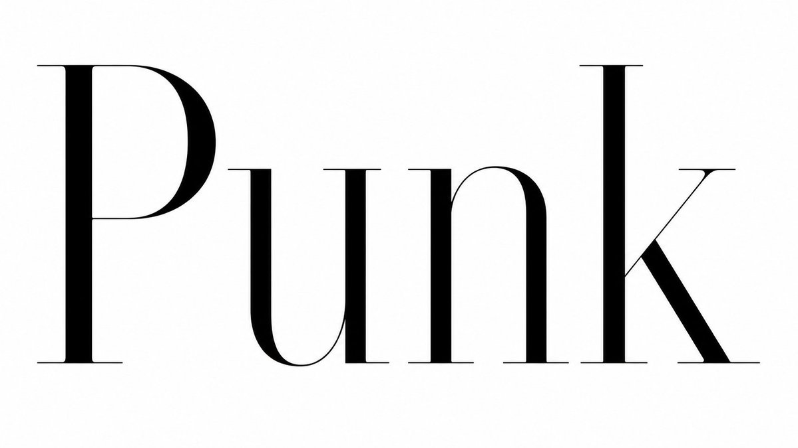
原文配图 · 字体 01 · Didot · 高反差衬线
这三篇 X 长文都来自同一位作者 —— @AdrianPunk115。
它们聚焦同一个问题：怎么用文字描述视觉，让 AI 生图模型生成"有设计感"的画面。
不是写一句"高级海报"就完事，而是把字体性格、纸张工艺、留白比例这些设计师本能反应，翻译成 AI 能稳定理解的提示词。
本文按主题分成三章独立呈现，每章的 prompt 都可以直接复制使用。
CHAPTER 01 · 字体图鉴（上册）
20 个常用字体 + 一套通用提示词公式 + 完整复制提示词
如果你经常做海报、杂志封面、长文配图、HTML 视觉或者 AI 生图，会遇到一个非常实际的问题：
你知道画面要"高级"，但不知道字体应该怎么描述。
很多人给 AI 的提示词只有一句："我要高级的字体"。
这几乎等于没有说。
字体真正决定的是一张图的性格。同一张照片，换成 Didot，像时装杂志；换成 Helvetica Neue，像瑞士现代主义海报；换成 Permanent Marker，又会立刻变成街头音乐现场。
所以我整理了 40 个常用的英文字体，不只是说出字体的名字，是把字体转成 AI 更容易理解的视觉语言。
说明：AI 生图模型通常不能像专业排版软件一样精确调用某个商业字体。下面的提示词重点是"模拟字体视觉特征"，比只写字体名稳定得多。
本次内容会分为上下册，上册会呈现 20 种常用杂志、书刊、HTML 字体，下册会呈现另外 20 个常用字体（含手写体），并给出选择指南。
以后控制任何字体，都可以按这个结构写：
[Font Name]-inspired + [font category] + [stroke characteristics] + [letter proportion] + [era / mood] + [usage scene]
以「字体名」为灵感 + 字体分类 + 笔画特征 + 字母比例 + 时代 / 情绪 + 使用场景
Didot-inspired high-contrast fashion serif, ultra-thin hairlines, elegant vertical stress, sharp refined serifs, luxury editorial typography, large-scale magazine headline.
以 Didot 为灵感的高反差时装衬线、 超细发丝笔画、 优雅垂直应力、 锋利精致衬线、 奢华编辑排版、 大字号杂志标题。
clean readable typography, accurate letterforms, no distorted letters, no decorative fantasy font.
清晰可读的排版、 准确的字母形态、 不要扭曲的字母、 不要装饰性的奇幻字体。
↑ 把 [Font Name] 换成你想用的字体名，下面是 20 个字体的现成提示词。
原文配图 · 字体示例 · Didot · 高反差衬线
AI 生图提示词：
Didot-inspired high-contrast fashion serif, ultra-thin hairlines, elegant vertical stress, sharp refined serifs, luxury editorial typography
以 Didot 为灵感的高反差时装衬线、超细发丝笔画、优雅垂直应力、锋利精致衬线、奢华编辑排版
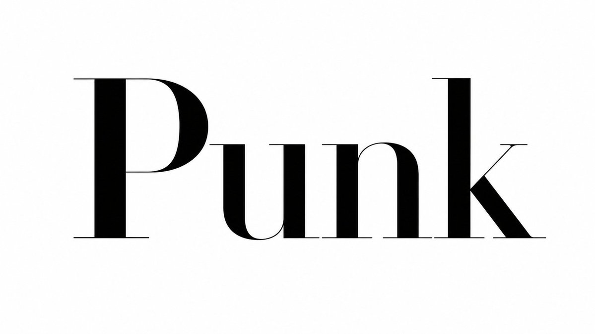
原文配图 · 字体示例 · Bodoni · 现代高反差衬线
AI 生图提示词：
Bodoni-inspired modern high-contrast serif, dramatic thick-and-thin strokes, razor-sharp unbracketed serifs, luxury fashion editorial typography
以 Bodoni 为灵感的现代高反差衬线、戏剧性粗细对比笔画、锋利无比的无连接衬线、奢华时装编辑排版
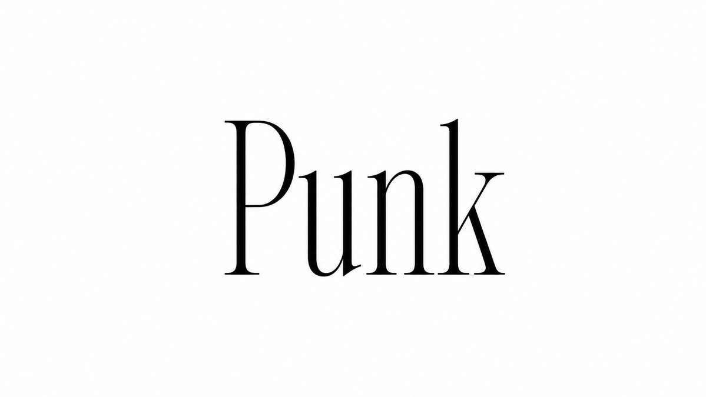
原文配图 · 字体示例 · PP Editorial New · 窄体编辑衬线
AI 生图提示词：
PP Editorial New-inspired narrow editorial serif, delicate thin hairlines, elongated letterforms, elegant high contrast, 1990s fashion magazine aesthetic
以 PP Editorial New 为灵感的窄体编辑衬线、细腻纤细发丝笔画、瘦长字母形态、优雅高反差、1990 年代时装杂志气质
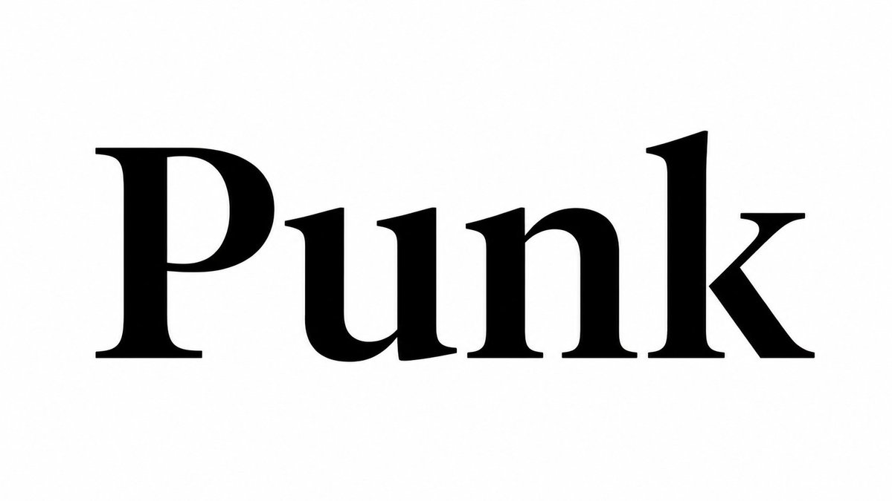
原文配图 · 字体示例 · Tiempos · 编辑衬线
AI 生图提示词：
Tiempos-inspired sophisticated editorial serif, strong readable proportions, subtle classical curves, premium newspaper and magazine typography
以 Tiempos 为灵感的精致编辑衬线、稳健可读比例、微妙古典曲线、高端报刊杂志排版
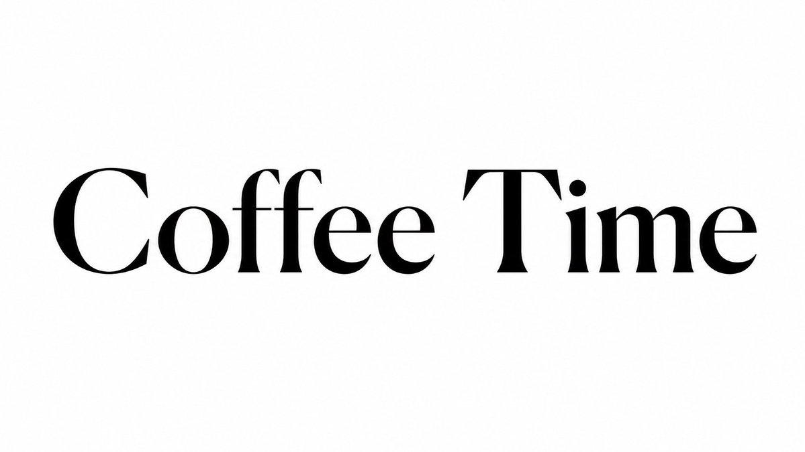
原文配图 · 字体示例 · Canela · 展示衬线
AI 生图提示词：
Canela-inspired soft display serif, graceful flared strokes, elegant curves, refined contemporary luxury editorial typography
以 Canela 为灵感的柔和展示衬线、优雅外扩笔画、精致曲线、考究的当代奢华编辑排版
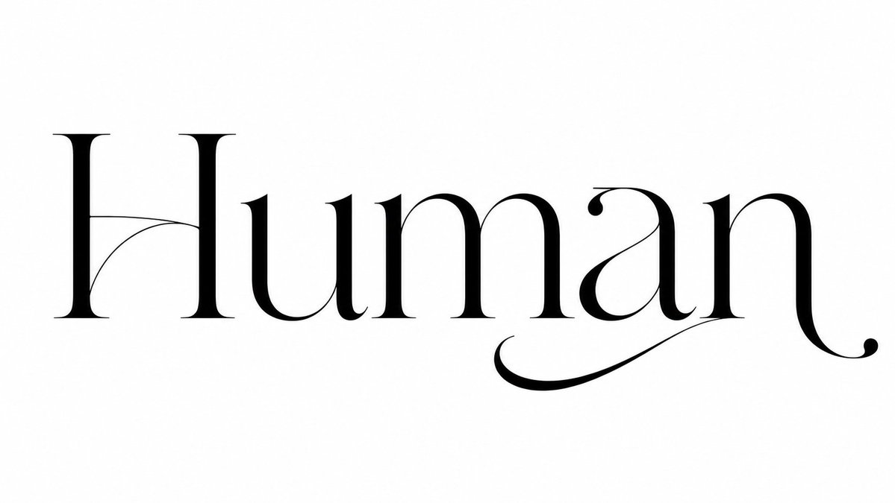
原文配图 · 字体示例 · Ogg · 书法式展示衬线
AI 生图提示词：
Ogg-inspired calligraphic display serif, dramatic elegant curves, expressive terminals, refined swashes, high-fashion editorial typography
以 Ogg 为灵感的书法展示衬线、戏剧化优雅曲线、富表现力的端部、精致花饰、高端时装编辑排版
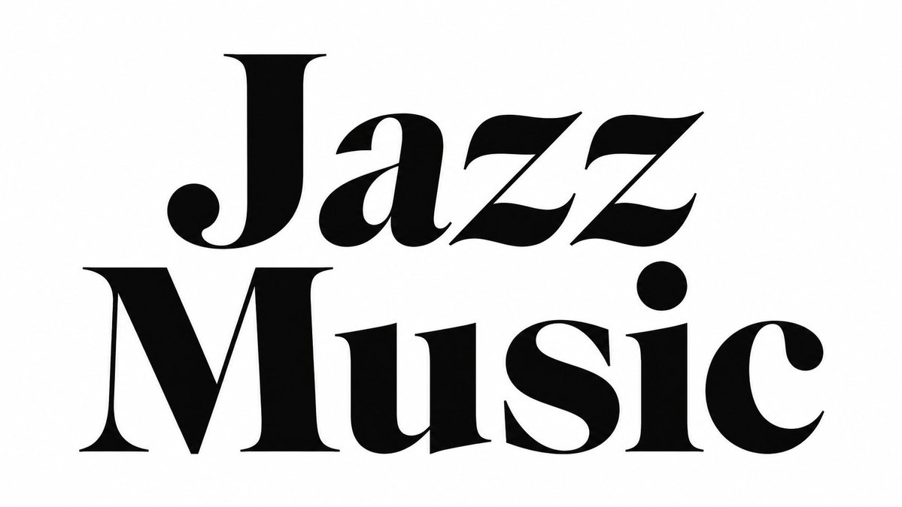
原文配图 · 字体示例 · GT Super · 表现型衬线
AI 生图提示词：
GT Super-inspired expressive editorial serif, dramatic curves, vintage newspaper influence, sophisticated display typography
以 GT Super 为灵感的表现型编辑衬线、戏剧化曲线、复古报纸影响、精致展示排版
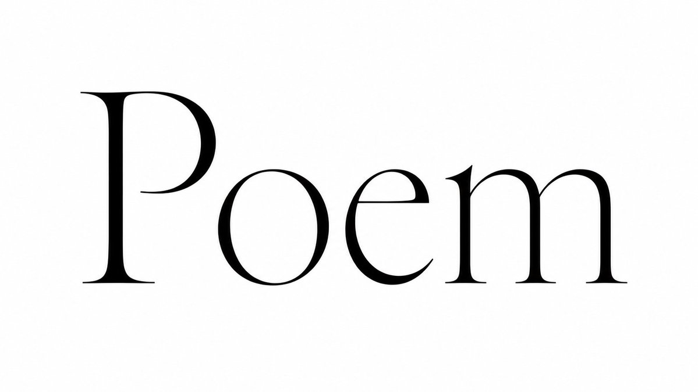
原文配图 · 字体示例 · Cormorant Garamond · 古典衬线
AI 生图提示词：
Cormorant Garamond-inspired elegant old-style serif, tall ascenders, delicate contrast, literary and poetic editorial typography
以 Cormorant Garamond 为灵感的古典优雅衬线、高耸升部、细腻反差、文学诗意编辑排版
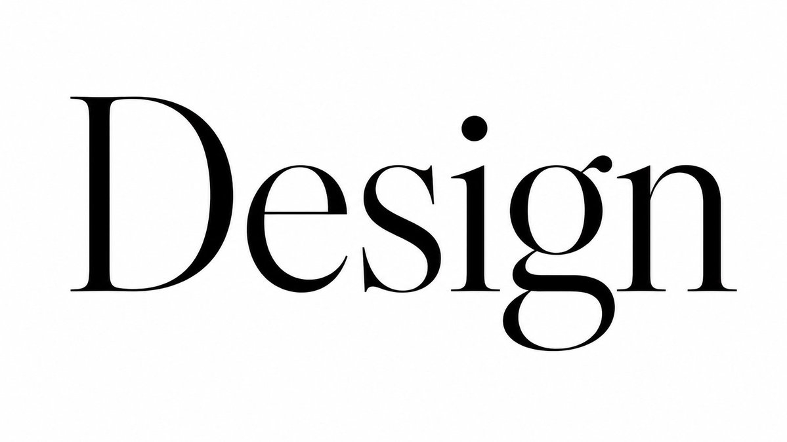
原文配图 · 字体示例 · Instrument Serif · 现代展示衬线
AI 生图提示词：
Instrument Serif-inspired contemporary display serif, distinctive curves, elegant sharp terminals, refined art-book typography
以 Instrument Serif 为灵感的当代展示衬线、独特曲线、优雅锋利端部、考究艺术书排版
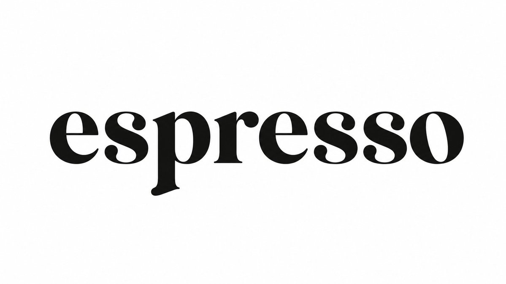
原文配图 · 字体示例 · Fraunces · 柔性衬线
AI 生图提示词：
Fraunces-inspired expressive soft serif, playful rounded curves, retro editorial character, sophisticated contemporary display typography
以 Fraunces 为灵感的柔和表现型衬线、俏皮圆润曲线、复古编辑气质、精致当代展示排版
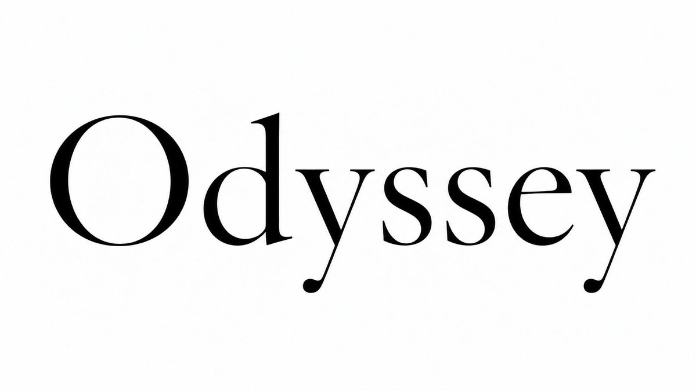
原文配图 · 字体示例 · Caslon · 老式衬线
AI 生图提示词：
Caslon-inspired classic old-style serif, warm humanist proportions, traditional book typography, understated editorial elegance
以 Caslon 为灵感的古典老式衬线、温暖人文比例、传统书籍排版、低调编辑优雅
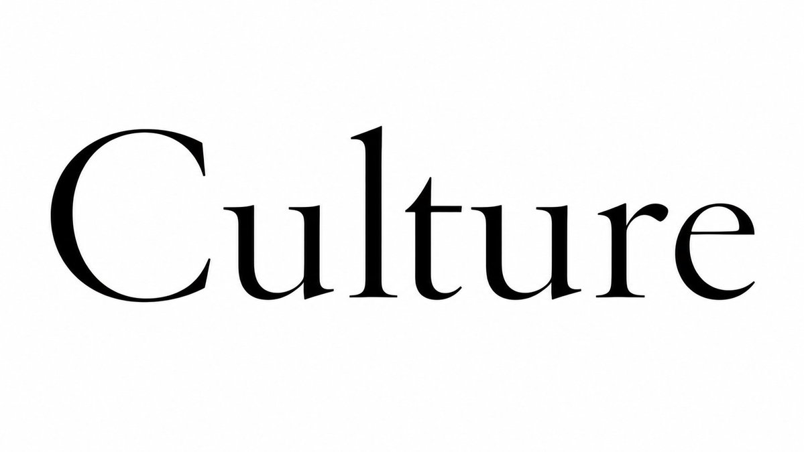
原文配图 · 字体示例 · Garamond · 人文衬线
AI 生图提示词：
Garamond-inspired humanist old-style serif, elegant classical proportions, soft organic strokes, timeless literary typography
以 Garamond 为灵感的人文老式衬线、优雅古典比例、柔和有机笔画、永恒文学排版
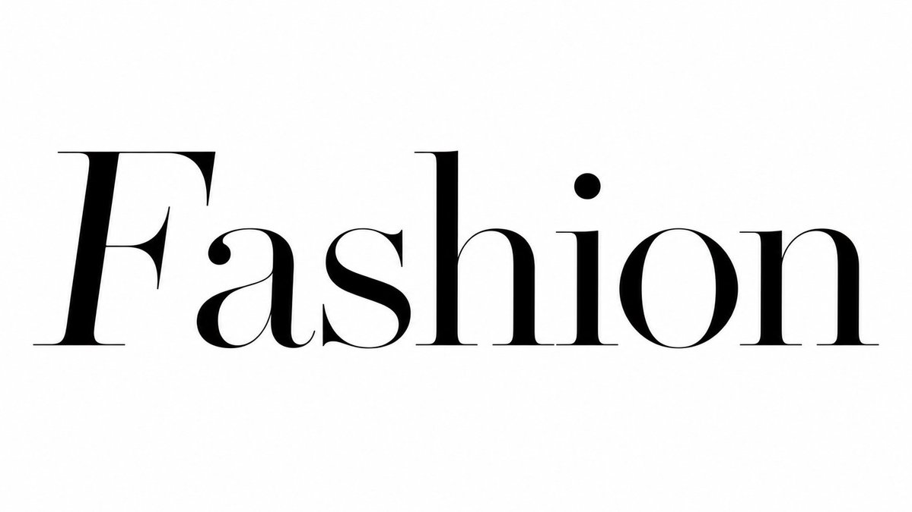
原文配图 · 字体示例 · Playfair Display · 高反差展示衬线
AI 生图提示词：
Playfair Display-inspired high-contrast display serif, elegant transitional proportions, refined fashion editorial headline typography
以 Playfair Display 为灵感的高反差展示衬线、优雅过渡比例、精致时装编辑标题排版
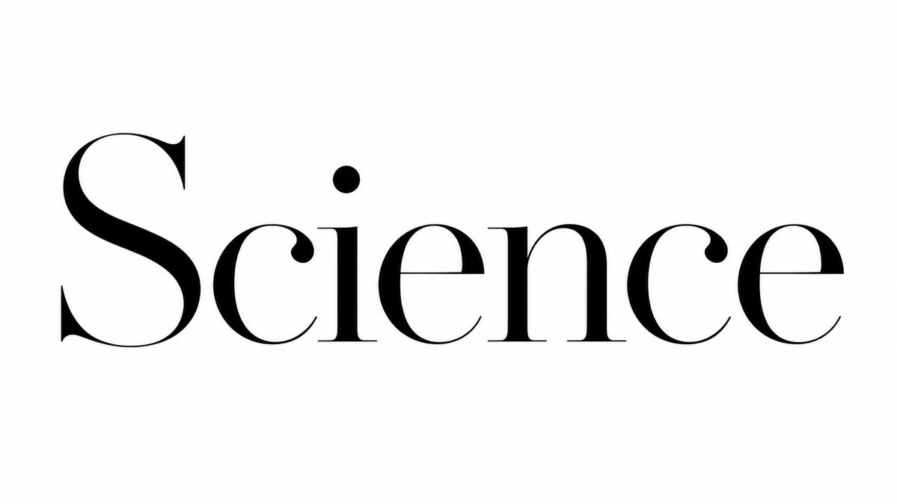
原文配图 · 字体示例 · Lyon Display · 高端展示衬线
AI 生图提示词：
Lyon Display-inspired refined editorial serif, elegant contrast, sophisticated proportions, premium magazine display typography
以 Lyon Display 为灵感的精致编辑衬线、优雅反差、考究比例、高端杂志展示排版
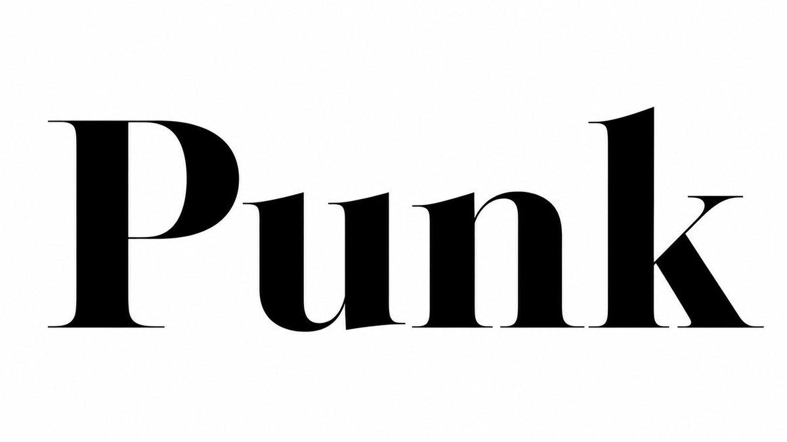
原文配图 · 字体示例 · Abril Display · 展示衬线
AI 生图提示词：
Abril Display-inspired dramatic display serif, strong thick-and-thin contrast, confident editorial headline, contemporary magazine typography
以 Abril Display 为灵感的戏剧化展示衬线、强烈粗细对比、自信编辑标题、当代杂志排版
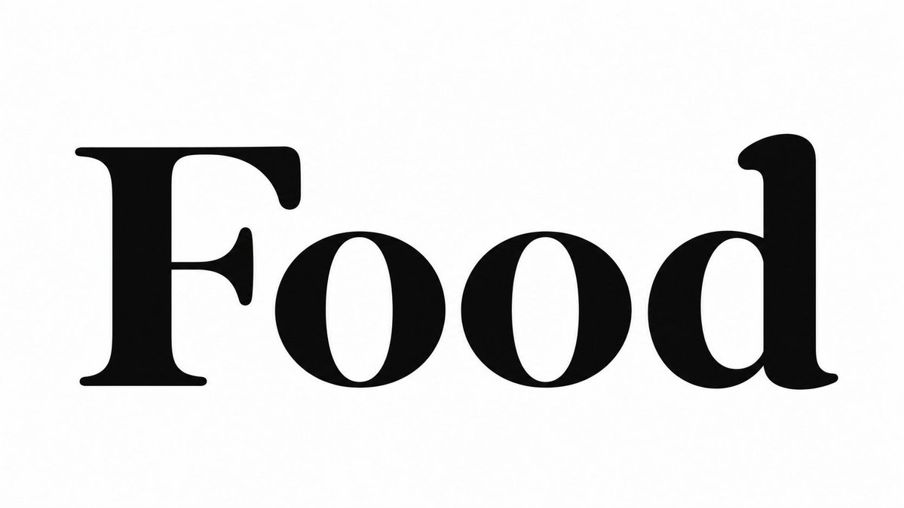
原文配图 · 字体示例 · Recoleta · 圆润衬线
AI 生图提示词：
Recoleta-inspired friendly retro serif, soft rounded forms, expressive curves, warm contemporary editorial personality
以 Recoleta 为灵感的复古友善衬线、柔和圆润形态、富表现力曲线、温暖当代编辑个性
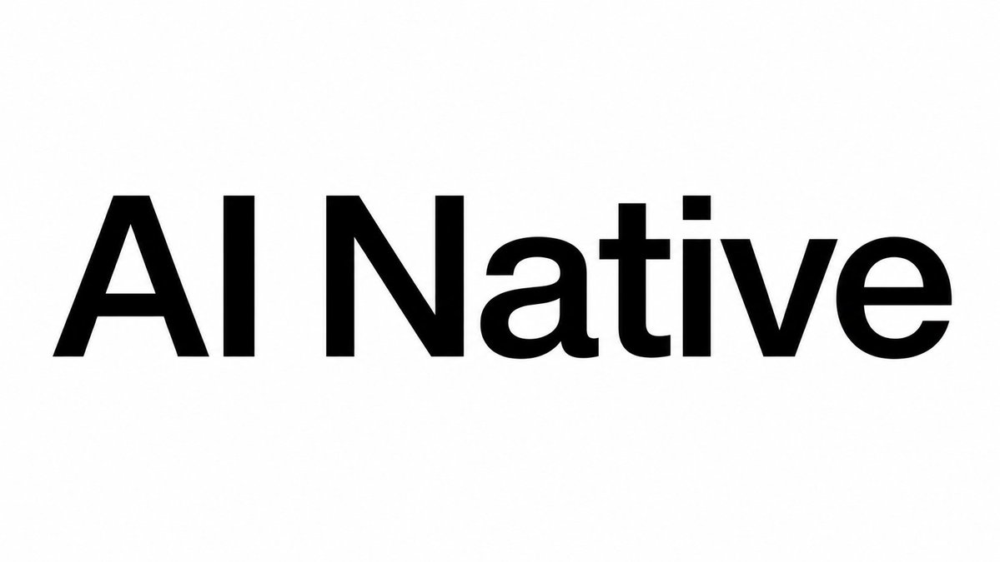
原文配图 · 字体示例 · Helvetica Neue · 新无衬线
AI 生图提示词：
Helvetica Neue-inspired neo-grotesque sans serif, neutral Swiss typography, clean geometry, precise spacing, minimalist editorial design
以 Helvetica Neue 为灵感的新怪诞无衬线、中性瑞士排版、干净几何、精确间距、极简编辑设计
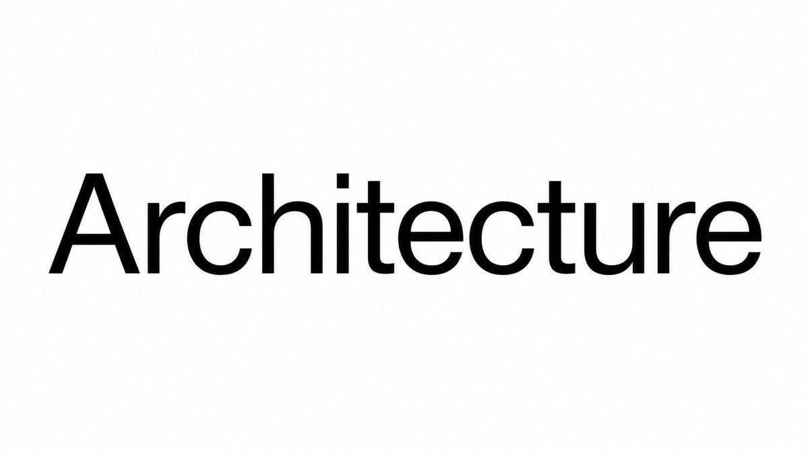
原文配图 · 字体示例 · Neue Haas Grotesk · 新怪诞无衬线
AI 生图提示词：
Neue Haas Grotesk-inspired Swiss neo-grotesque, compact clean letterforms, restrained modernist typography, precise editorial layout
以 Neue Haas Grotesk 为灵感的瑞士新怪诞、紧凑干净字形、克制现代主义排版、精确编辑布局
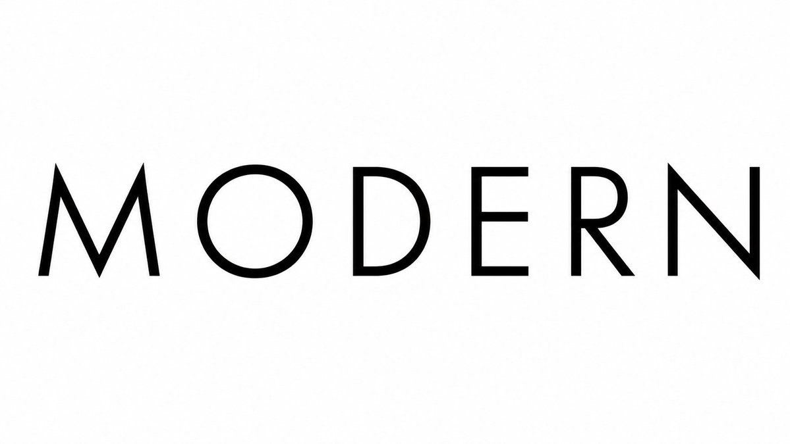
原文配图 · 字体示例 · Futura · 几何无衬线
AI 生图提示词：
Futura-inspired geometric sans serif, perfect circular forms, clean Bauhaus modernism, wide uppercase spacing, architectural poster typography
以 Futura 为灵感的几何无衬线、完美圆形形态、干净包豪斯现代主义、宽大写间距、建筑海报排版
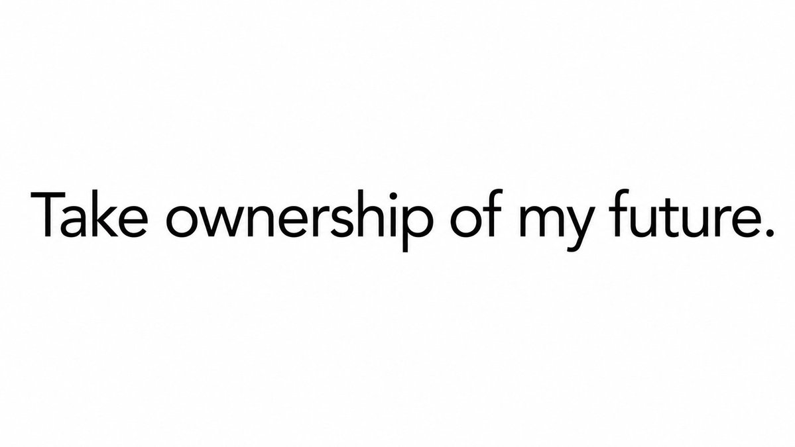
原文配图 · 字体示例 · Avenir · 几何人文无衬线
AI 生图提示词：
Avenir-inspired geometric humanist sans serif, clean rounded proportions, elegant contemporary typography, calm premium brand aesthetic
以 Avenir 为灵感的几何人文无衬线、干净圆润比例、优雅当代排版、宁静高端品牌气质
CHAPTER 02 · 击凸 × 压凹
一套击凸 × 压凹质感系统提示词，让 AI 生成有"摸得到"质感的极简海报
这套提示词的核心，是把击凸（Emboss）与压凹（Deboss）这种原本属于印刷工艺的触感，转译成可生成的视觉语言。
两者都不依赖复杂的 3D 建模，而是通过纸张纹理、边缘压痕、柔和侧光和细微阴影，制造一种"摸得到"的质感。相比普通平面海报，它更像一本精装书封、一本独立杂志，或者一张有收藏感的艺术印刷品。
这套提示词适合的场景其实很广。可以拿来做小红书 / 推特封面、文章头图、书籍封面、品牌视觉、金句海报、名牌等。
使用主题：城市主题、旅行纪念、运动主题、咖啡与食物、植物动物、科技与 AI、生活方式内容。
它最大的特点是会根据主题自动理解含义，再随机组合字体、字号、排版、配色、视觉隐喻和击凸压凹关系。你只需要给一个主题或一句话，就能得到一张既极简、又有印刷质感，同时还能保持较强设计感的单张海报。
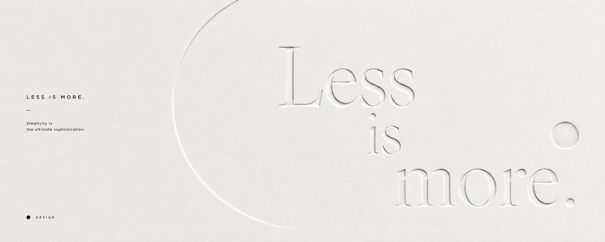
原文配图 · 击凸×压凹质感 · @AdrianPunk115
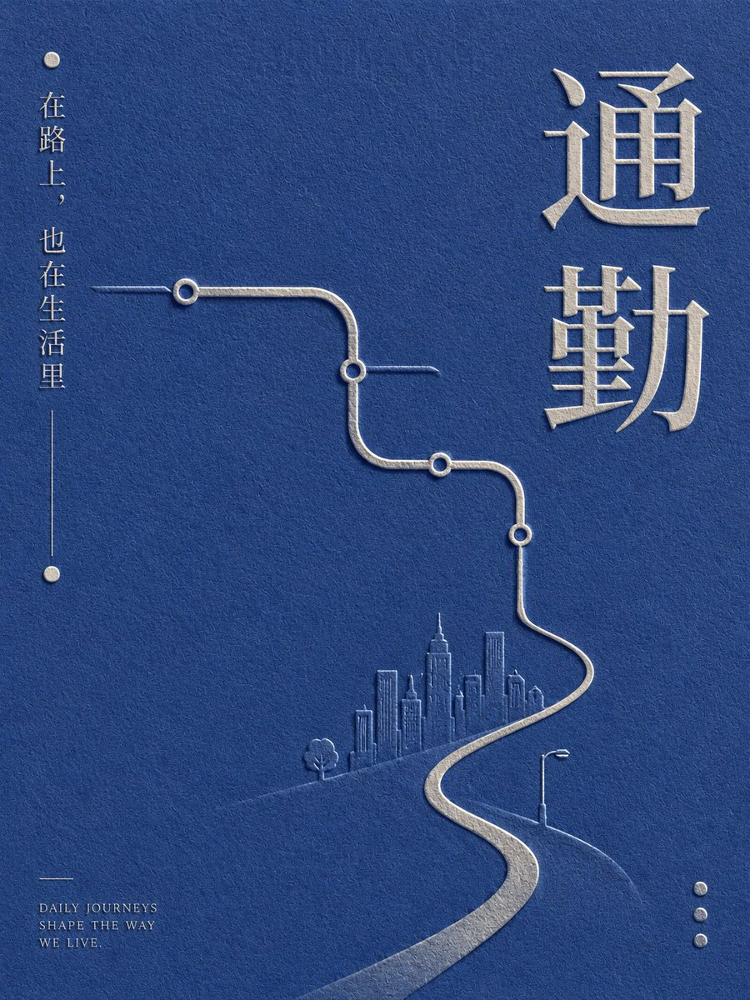
原文配图 · 击凸×压凹质感 · @AdrianPunk115
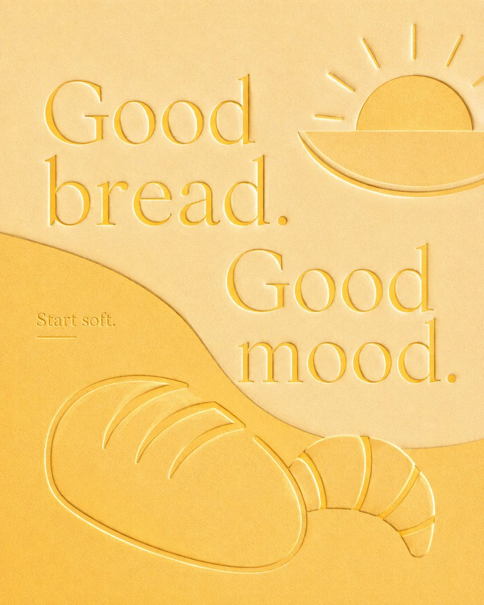
原文配图 · 击凸×压凹质感 · @AdrianPunk115
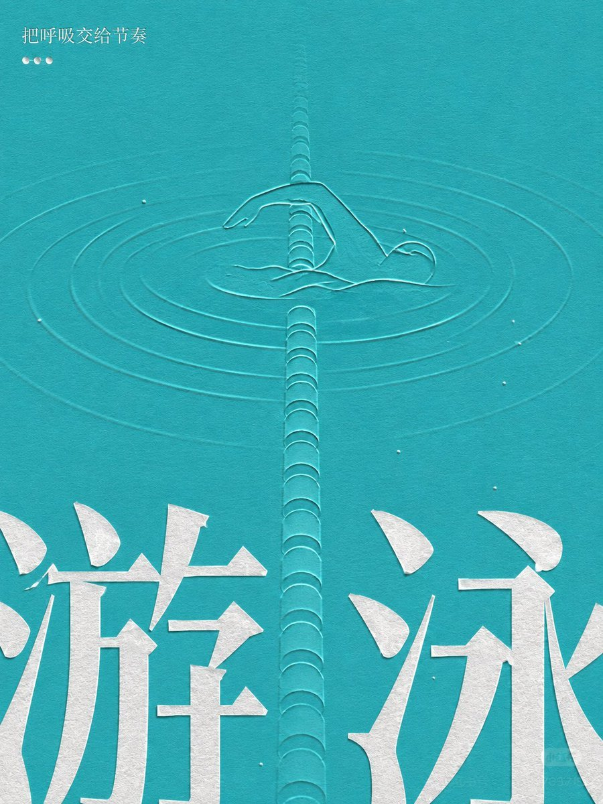
原文配图 · 击凸×压凹质感 · @AdrianPunk115
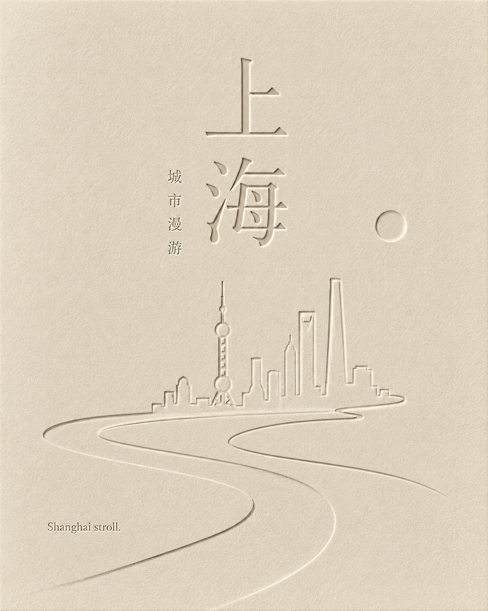
原文配图 · 击凸×压凹质感 · @AdrianPunk115
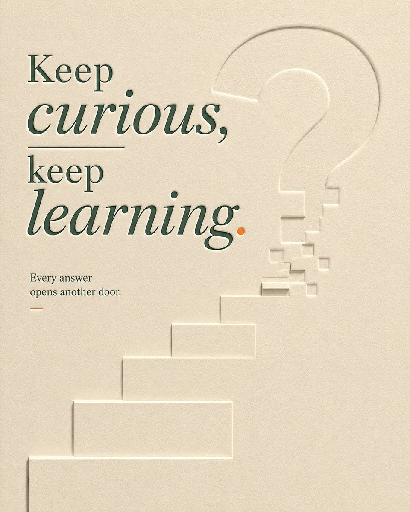
原文配图 · 击凸×压凹质感 · @AdrianPunk115
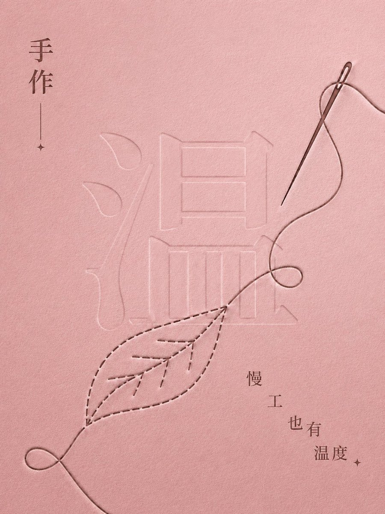
原文配图 · 击凸×压凹质感 · @AdrianPunk115
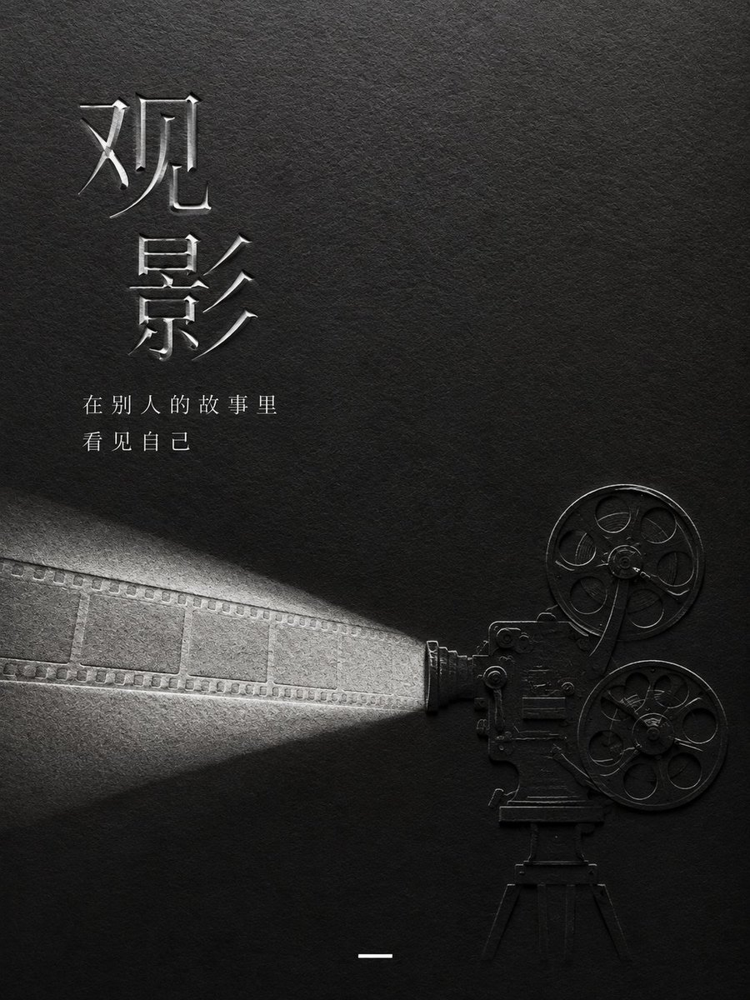
原文配图 · 击凸×压凹质感 · @AdrianPunk115
你是一名顶级平面设计师、编辑设计师、书籍封面设计师与视觉编排艺术总监，擅长极简主义、纸张击凸压凹工艺、文字构图、现代海报设计与视觉隐喻转译。 请根据用户输入的【主题】【标题】【副标题/短句】【比例】，创作一张可用于封面或海报的极简设计作品。作品必须具备真实纸张质感，并呈现高级的击凸（emboss）与压凹（deboss）效果。整体不是普通海报排版，而是带有设计画册、艺术书封、独立杂志封面的视觉气质。 【用户输入】 主题： 标题： 副标题/短句： 画面比例： 【总目标】 先理解主题含义，不要只做字面表达。请从主题中提炼一个最核心的情绪、关系、动作、状态或概念，再转译成一个非常克制的视觉隐喻。整张画面强调"少而准"，让文字、图形、留白、工艺共同构成完整设计。 【随机组合机制】 每次生成时，请自动随机组合以下要素，并确保结果自然、高级、不模板化： 1. 字体风格随机 从以下方向中随机选择一种或混合两种： 现代无衬线、优雅衬线、压缩体、细长体、高对比标题字、几何感字体、编辑感字体。 字体必须有审美，不要呆板，不要像普通办公排版。 2. 字号层级随机 至少形成明显的三级层级： 主标题大字、辅助文字中号、小注释或小标识微型字体。 允许出现强烈的大小反差，让文字本身形成视觉张力。 3. 标题排版方式随机 不要固定左对齐、居中或底部标题。请在以下方式中随机选择或组合： 拆行排版、错位排版、跨区域排版、局部竖排、横竖混排、单词断行、字母拉开、局部重叠、沿边缘分布、标题嵌入图形、标题与留白形成借位关系。 让文字本身参与构图，而不是贴在画面上。 4. 构图方式随机 从以下构图逻辑中随机选择： 偏左留白、偏右留白、上重下轻、下重上轻、对角线构图、角落构图、中心偏移构图、上下分区、左右分区、模块化构图、边缘化构图、跨版构图。 画面必须灵活，避免千篇一律。 5. 主视觉隐喻随机 根据主题自动提炼 1 个核心视觉隐喻，只保留 1 个主图形，必要时可配 1–2 个极少量辅助元素。 可选隐喻方向包括但不限于： 圆、半圆、路径、台阶、门、窗、月亮、太阳、山、波纹、书、本子、植物、花、叶子、石头、鸟、猫、鱼、蝴蝶、箭头、问号、钥匙孔、楼梯、跑道、靶心、星点、地平线、地图折角、胶片、咖啡杯、呼吸线条、几何切面。 图形必须极简，不复杂，不堆砌。 6. 颜色方案随机 颜色控制在 1–2 种主色内，可带极少量点睛色。每次随机从以下方向中选择： 纯色背景、双色拼色背景、同色系深浅关系、低饱和双色、高对比双色。 可优先参考这些经典组合： 红+白、黄+深蓝、黑+金、米白+黑、米白+深蓝、森林绿+米白、粉+酒红、浅蓝+白、橙+深棕、灰白+红点缀、午夜蓝+金色。 避免复杂渐变、避免多色混乱。 7. 击凸压凹关系随机 让一部分标题文字使用击凸，一部分图形使用压凹，或相反处理。也可以让部分元素与背景同色，仅通过纸面起伏和侧光来呈现。 要求： 边缘压痕清晰、纸张厚度自然、阴影细腻、光线柔和。 不要塑料感，不要夸张3D建模感，不要金属雕刻感。 8. 辅助元素随机 允许极少量辅助排版元素随机加入： 编号、小圆点、细线、短横线、括号、坐标感标记、微型说明文字、英文小注释、日期、页码感信息。 辅助元素只能点到为止，不能喧宾夺主。 【设计约束】 1. 画面极简，元素少，但排版必须讲究。 2. 不做复杂插画，不做繁琐背景。 3. 不要模板化，不要每次都把标题放左边或中间。 4. 文字必须清晰准确，中文和英文排版都要自然。 5. 图形与文字必须产生关系，而不是各放各的。 6. 留白必须成为构图的一部分。 7. 整体气质要安静、现代、克制、聪明、高级。 8. 风格接近：艺术画册封面、独立杂志、设计书封、现代视觉海报。 【输出结果要求】 输出一张完整海报/封面，必须同时具备： 极简构图 + 灵活排版 + 字体变化 + 视觉隐喻 + 纸张质感 + 击凸压凹工艺 + 高级编辑设计感。 请确保每次生成时，版式、字体、构图、颜色、图形位置都能产生合理变化，像同一设计系统下的不同设计实验，而不是重复同一个模板。
CHAPTER 03 · Less Is More
一套法式极简艺术海报系统提示词 —— 先做减法，再用准确隐喻把主题留下来
前几天刷到法国画家 Frédéric Forest 的作品：大面积留白，几根极简线条，却能把拥抱、孤独、爱与克制表达得很深。
这就是画面里的 Less is More。元素越少，情绪反而越集中。
这套提示词的核心，就是让画面先做减法，再用一个准确的视觉隐喻把主题留下来。
少，不代表空。
少，是让重要的东西被看见。
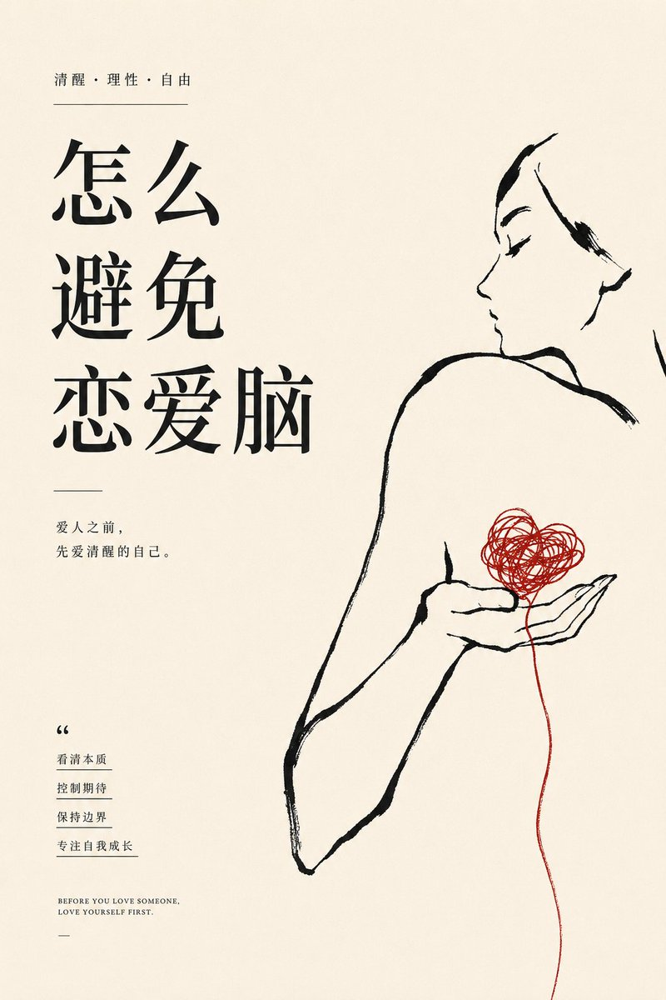
原文配图 · Less Is More · @AdrianPunk115
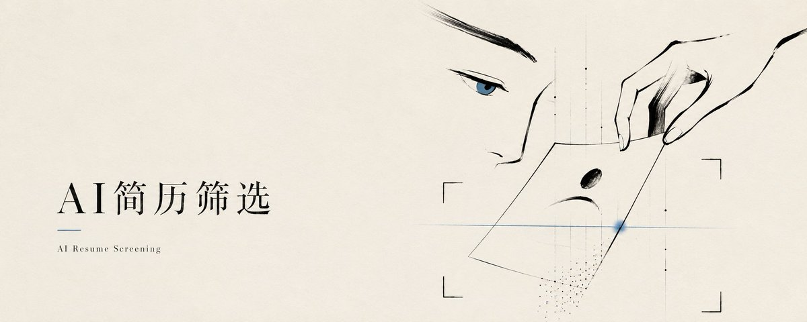
原文配图 · Less Is More · @AdrianPunk115
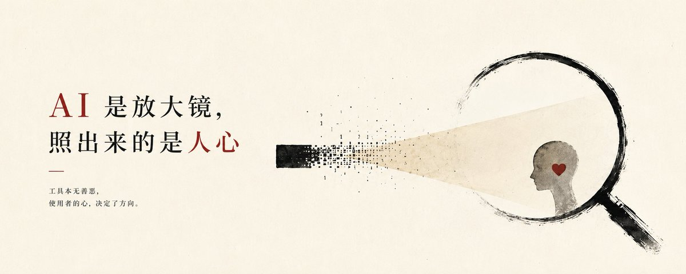
原文配图 · Less Is More · @AdrianPunk115
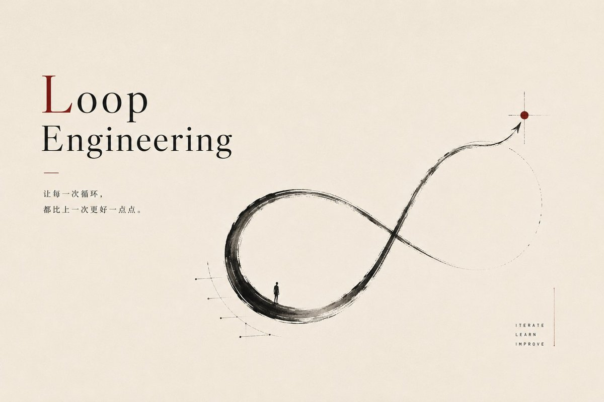
原文配图 · Less Is More · @AdrianPunk115
你是一名法式极简艺术海报设计师、视觉隐喻导演和编辑设计师。
请围绕我输入的主题，创作一张大留白、少线条、少文字、具有思想张力的极简艺术封面。
【用户输入】
主题：{{填写主题}}
画幅比例：{{5:2 / 16:9 / 4:5 / 3:4}}
副主题：{{可留空，最多1—2句}}
【第一步：理解主题】
不要收到主题后立刻套用人物、物品或固定构图。
先提炼主题中的：
核心观点；
核心矛盾；
情绪状态；
因果关系；
最值得被看见的那一层含义。
将主题压缩成一句清晰判断，再寻找一个能够承载这句话的视觉隐喻。
每张图只保留：
一个主标题；
一个核心隐喻；
一个主要视觉中心；
最多1—2句副主题。
不要把主题中的所有概念逐一画出来。
【第二步：判断需要什么主体】
视觉主体可以是：
人物或人物局部；
人物之间的关系；
人物与物体之间的关系；
日常物品；
自然物体；
抽象线条；
几何结构；
空间距离；
光影、缺口、遮挡、重复或断裂。
人物不是默认选项，也不是禁止选项。
如果主题与爱情、关系、孤独、信任、欲望、成长、告别、自我和选择有关，可以使用人物、侧脸、背影、手部、身体姿态或人物间的距离。
如果主题与制度、规则、效率、循环、信息差、边界、秩序或风险有关，可以使用物体、结构、线条和空间关系。
如果主题与AI、互联网、算法、数字世界或科技有关，画面必须让人产生轻微的科技联想，但仍要保持艺术化表达。
科技关联可以通过以下方式表现：
由极少量方点组成的线；
逐渐转化为像素的墨迹；
一段有规律的节点；
极简数字痕迹；
人工秩序与自然笔触之间的对比；
一个传统物体出现轻微数字化变化。
这些科技痕迹只能作为隐喻的一部分，不能成为装饰背景。
不要直接堆放芯片、机器人、机械大脑、发光网络、数据面板或科技图标。
【视觉隐喻规则】
视觉隐喻必须根据主题重新思考，不能机械复用过去的答案。
可以使用：
一个动作；
一个普通物品；
两个物体之间的关系；
人物与物体之间的关系；
结构的断裂、循环、错位、遮挡、平衡或失衡；
距离、方向、重量、大小和负空间；
自然形态与人工秩序之间的变化。
每张图只使用一个核心隐喻。
隐喻必须简单，但不能肤浅。
不看副文案时，观众也应当能够产生与主题有关的联想。
如果一个隐喻需要长篇解释，说明它不够准确，应重新选择。
【避免直白和俗套】
不要把主题中的名词直接变成图标。
例如：
爱情主题不必默认使用红心；
AI主题不必默认使用机器人、芯片和电路板；
自由主题不必默认使用飞鸟和鸟笼；
思考主题不必默认使用灯泡；
时间主题不必默认使用时钟；
成长主题不必默认使用树苗。
只有当这些元素经过重新组合、变形或产生新的关系，能够形成独特隐喻时，才可以使用。
【画面风格】
背景使用温暖的米白色、象牙白或轻微旧纸色。
主体以黑色手绘墨线、墨块和极简轮廓为主。
线条粗细不均，带有自然停顿、断裂、毛边、轻微晕染和手工痕迹。
画面应像艺术家用墨水笔、毛笔或粗记号笔迅速捕捉下来的草图。
人物、物体和抽象结构都不必完整描绘。
只保留最关键的轮廓、动作、结构和情绪。
允许大部分内容消失在留白中，让观众自行补全。
整体留白占画面70%—85%。
画面必须安静、克制、优雅，有私人手稿和艺术编辑海报的气质。
【构图】
根据隐喻自动选择最合适的构图。
可以使用：
一个局部被放大；
单一物体偏置；
人物局部与物体形成关系；
两个物体彼此支撑、拉扯或远离；
线条从完整逐渐断裂；
自然形态逐渐变为人工秩序；
主体被画面边缘裁切；
大量负空间包围一个小主体。
主体不必居中。
主标题与视觉主体形成清晰的左右、上下或远近关系。
不要平均分割画面。
不要把所有元素放得一样大。
【标题排版】
主标题必须清晰、有封面感，是画面的第一视觉之一。
可以使用：
高对比衬线字体；
克制的中文宋体气质；
极简无衬线字体；
具有法式编辑感的文字排版。
标题较长时，自动拆成2—3行。
标题不能太小，也不能压满画面。
可以将最重要的1—2个词使用唯一强调色。
不要随意混合多种字体。
【副主题】
副主题最多1—2句。
每句尽量控制在8—18个字。
副主题只补充核心判断，不解释全部画面，不重复主标题。
未提供副主题时，可以根据主题提炼一句简短、有判断力的文案。
【色彩】
以米白背景和黑色墨线为主。
最多加入一种强调色：
暗红；
克制蓝；
灰绿；
淡黄。
强调色只用于一个关键位置：
一个词；
一段线；
一个节点；
一个物体局部；
人物的一个微小细节。
强调色面积不超过画面3%。
不要使用渐变霓虹、蓝紫科技光、大面积鲜艳颜色或多色装饰。
【最终检查】
生成前检查：
是否只有一个核心隐喻；
是否根据主题判断了要不要出现人物；
如果是科技主题，是否存在克制而明确的科技联想；
科技意象是否仍然服从手绘墨线和大留白；
是否避免了常见图标和素材模板；
主标题是否足够清楚；
副主题是否不超过两句；
是否有70%—85%的留白；
是否能删除任何多余元素。
【严格避免】
避免所有主题都套用同一种人物侧脸、手部或背影；
避免所有主题都使用放大镜、红心、鸟笼、飞鸟、绳结、道路和月亮；
避免为了文艺感机械加入人物；
避免为了科技感加入电路板、机器人、芯片、发光网络和数据界面；
避免复杂叙事场景；
避免写实照片感；
避免3D模型；
避免商业科技宣传页；
避免信息图和功能介绍；
避免图标堆叠；
避免多个隐喻同时出现；
避免多种强调色；
避免超过两句副主题；
避免大段文字；
避免水印、签名、日期、网址和无关品牌标志。
最终生成一张：
以准确思考为起点；
人物、物品、抽象结构均可成为主体；
科技主题有隐约但准确的科技意象；
保持原始手绘墨线、大面积留白和克制艺术气质；
只有一个核心隐喻、一个视觉中心和少量文字的法式极简艺术封面。
SOURCES & CREDITS
使用建议：三套 prompt 不是越通用越好用——字体提示词的关键在于「模拟视觉特征」而非「直接写字体名」；击凸压凹的精髓在于「随机组合 8 项要素」避免模板化；Less Is More 的核心是「先减法，再选一个准确隐喻」。三章各有侧重，建议先从章 1 的字体提示词开始上手，再逐章扩展到整套系统。
字体决定图的性格，工艺决定图的触感，留白决定图的呼吸。
整理自 @AdrianPunk115 三篇 X 长文